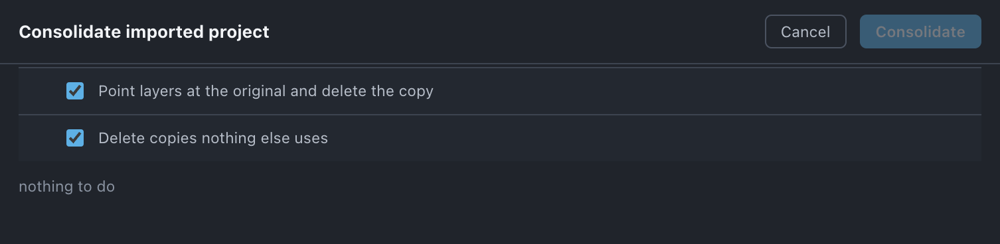

Consolidate
Cleans up after importing another .aep — points your layers at the files you already have and removes the copies that are identical to them.
Use it when
- You have just imported a previous version of the same job, and half of it is a second copy of what you already have.
- A colleague's
.aepcame in and brought its own copy of every plate. - You imported a template project and it duplicated your comps and footage.
- Before you run Organize on anything that came from an imported
.aep.
What it does
Finds every imported .aep subtree in the project and pairs each item in it against the counterpart you already had, by name and type. A pair is only treated as the same thing when a structural fingerprint matches as well — layer count, duration and dimensions for a comp; path, duration and dimensions for footage; dimensions and duration for a solid. Where they match, every layer using the copy is pointed at the original and the copy is deleted. Copies nothing uses are deleted. Everything else is left alone. It is one ⌘Z.
What it does not do: it does not file anything into your folder structure — the survivors stay where the imported project put them, and the sweep only clears the folders this run emptied. Filing is Organize's job, after this.
Do it
- Press Consolidate — after importing the
.aep, and before Organize. - Read the note per imported project: \<path\>: n identical, m diverged (left alone), k unused here, j only here — and l ambiguous (skipped) when there were duplicate names on your side.
- Read Relinks layers — each copy and the original your layers will point at instead — and Removes, every item by name with its folder.
- Press Consolidate n.
Scope. Every imported subtree in the project, in one run. A subtree nested inside another is handled by its outermost parent, so nothing is counted twice.

What you'll see
| Option | What it means |
|---|---|
| Point layers at the original and delete the copy | On by default. The identical pairs: layers are repointed, then the duplicate is retired. This is the part that does the work. |
| Delete copies nothing else uses | On by default. Items that came in with the import, have no counterpart on your side, and are referenced by nothing. |
What each of the five outcomes gets:
| Outcome | What happens |
|---|---|
| identical | layers repointed at your original, the copy deleted |
| unused here | deleted, if nothing else uses it |
| diverged | left alone, and named in the preview |
| only here | left alone |
| ambiguous | left alone — the name matched more than one item on your side, so the pairing is not decidable |
Undo
One ⌘Z, deletes and relinks included. Nothing on disk changes.
Watch out
Things you might not think to do
- Merge a previous version of the job back in and keep only the parts that changed. Import it, consolidate, and what is left of the import is exactly what differs. On one real project this removed 256 identical items out of a 336-item subtree.
- Use the diverged rows as a rough diff. They name the comps whose dimensions differ between the two versions — not a full comparison, but often the answer to "what did they change".
- Consolidate, then Organize, then Empty folders. That order gets an imported project down to what it added and files it away.
Pairs with
Organize, always after this. Unused for the items on your own side that nothing points at — its Include items inside imported .aeps stays off precisely so that this tool handles the imported half.